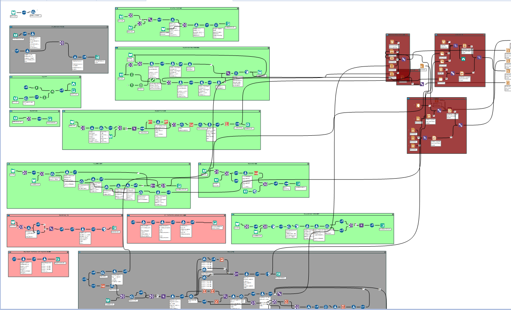

Pilots need information about their destination airport or airfield, and this information is relayed through manually crafted charts; These important and complicated graphical documents provide essential information to the aviation community, and have to be constructed with precision and attention to detail. There's a significant amount of information, including safety warnings, terrain contours, communication frequencies, geospatial data, and other instructions that affect flight safety. While the general format and information is standardized, no two charts are the same, and the information that is needed on each chart changes based on shifting criteria. The technicians that create these charts have a strong background and understanding in aeronautics, but a large portion of the time was spent on menial tasks, such as extracting information from a data piece-by-piece and individually plotting each element.
To address this issue, we collarborated with the Geospatial Information firm, TerraVeta, to develop automation software for mapping aviation charts. Our goal was to save as much time as possible by extracting data from a large database, cleaning and transforming the information, and then accurately plotting the correct data onto the chart with perfect accuracy, freeing up valuable free time for aviation experts to focus on larger conceptual issues. With TerraVeta's expertise in the aviation field and our excitement in tackling unique data and automation challenges, we successfully built a simple, intuitive system that converted a manual, time-intensive process into an automated, error-free solution.
Here's a sample aviation chart, which in this case describes how a pilot would fly into a specific airport following a specific approach procedure.

Our approach to the problem was simple:
We broke the project down into two major sections, Data and Programming. We spent several weeks questions and testing out possible approaches. Some of the questions we asked ourselves were:
In a complicated problem like this, it is essential to ask as many questions up front and determine a general plan, then break up the work into numerous small, attainable segments.
The data environment normally falls into one of two categories: either a chaotic mess filled with erroneous information that is incredibly difficult to navigate through, or massive amounts of information that take time to map the endless relationships. This project falls more into the latter category, as we used a government database with a clear maintenance plan and feedback loop. However, we had to create a logical, formulaic approach to make sure we were extracting only the data that was absolutely necessary, and no more - otherwise, the sheer volume of information would overwhelm our approach. We started by using a workflow tool, in this case Alteryx. Alteryx does an excellent job of allowing you to quickly join to databases, extract, blend, transform, mutate and perform calculations, and is our preferred tool at the start of any data project. Alteryx is our preferred tool in connecting with and understanding our data. Here is a segment of our workflow, where we extract data from several different places and molded it into a format that we could work with. While this is a complex web of data transformations, the end result was a set of very clean and concise arrays that we could input into the CAD plotting environment.
To give you a more detailed view of one segment of the workflow, the image below shows twenty different data transformation steps taking unformatted communication data and outputting a hierarchy of frequencies based on what information is available and which communication frequencies take precendence. Starting from the left, the workflow
Alteryx is an excellent tool to build an automated data transformation workflow, but to accomodate many users and give full control to the data engineers and mappers, we transitioned to the well-established, open-source statistical modeling programming language, 'R'. 'R' is the preferred tool of data scientists and engineers, with robust capabilities in everything from data transformation to machine learning and prediction modeling. While Alteryx provides ease of use and a visual understanding of the process very rapidly, 'R''s scalability was the natural choice when having to build an automation tool that numerous people would be using in a limited manner. Our solution built an interface for ease of use, while the scripts themselves form the backbone of the data platform. We relied heavily on 'Tidyvere' methodology and libraries, and used the 'sf', 'Raster' and 'spData' packages to build geospatial buffers that pull in the relevant navigational aids based on their latitude and longitude. We ensured that everything we did within 'R' was commented and documented, to ensure that anyone on our team could pickup and interact with the code. Here's a snippet, the entire sequence included about 1000 lines of code.

Putting all the text and symbols onto the page is done in Microstation, CAD software that is popular in many government engineering circles. Previously, the user would have to go through different databases, Excel spreadsheets or Access files, find the information that they needed, make calculations and physically type it into CAD. Geospatial information was plotted individually and most of the information had to be manually plotted, one piece at a time. Our methodology was to rethink the entire process, start from scratch and develop a natural order to populating the chart. We analyzed the document word-by-word and symbol-by-symbol and mapped out how to get the data from the database into Microstation instantaneously, in the exact correct position without error. While the general format is similar, each chart is completely different, fully dependent on the location and the approach procedure, so our programming had to be both logical and adaptive to shifting criteria. In the image below, you can see a segment of the chart with very important information for the pilot about the minimum altitude along the path the aircraft takes towards landing. Every piece of chart is calculated based on the terrain in a supplemental tool, and we automatically plotted this information into the CAD software.

Our programming philosophy is perhaps most similar to Agile methodology. We spend time understanding all the pieces of what needs to get done, we define the end goal very clearly, and we break the entire project into as many different segments as possible, with a very flexible plan of how these segments connect. In our experience, the traditional 'waterfall' methodology, which creates a specific plan with each step clearly defined, associated with timelines and developed sequentially is too rigid for this type of project - things don't go always go according to plan, and for us, flexibility and adaptability is much more important. We learn best by seeing what doesn't work, and we make progress by figuring out how to transfer small successes into the other pieces of the project. At the end, once our strategy worked and we got each piece to plot, we went back and refactored our code for efficiency and optimization.
We initially started developing in the Microstation Development Language, which is close to the 'C' programming language that we have experience in, but due to the lack of resources in some segments of the project, we shifted to Visual Basic (VBA), a common language with large user groups, which Microstation supports. One of the most challenging aspects of this project was the shifting criteria and hierarchies. For instance, the government organization that maintains this development contract has several pages of criteria when determining which frequencies to publish, in which order, and the location on the page. Our code had to be dynamic enough to adapt to this type of programming, while at the same time avoiding inefficient, hundred-line 'if-statements'. We created a unique framework with cascading logic that mimics the computer science principle of binary search - if one event happens, then we can eliminate different chains of possibilities. In general, we programmed with the mentality that certain parameters or requirements could shift at any given time, and the code had to be dynamic enough to anticipate unexpected rules and situations. This method of programming blended both theory and practical application from computer science and optimization, and is a unique solution that makes our methodology unique.
With a few months of planning beforehand, and a week-long session of intense development work at TerraVeta's office in St. Louis, we successfully created that automated the process of creating aviation plots, leaving aviation professionals to focus on more important tasks that involve human interpretation. TerraVeta's domain expertise in aviation was absolutely essential, as their knowledge about the intricacies and what was needed helped us quickly hone a plan and build a system that works. By pairing with experts, you can learn many behind-the-scene intricacies that can address frustration points that aren't evident. After several weeks of debugging, testing and trying to break the software any way we could, there have been no errors noted, and we reduced an average of two hours of work down to thirty seconds. We licensed this software to the main government contractor, a subsidiary of a Fortune 30 company, and are expanding our plans for automation development work in several different industries, including aviation.
Overall, we learned that developing a flexible approach that breaks large projects into smaller chunks and pairing with experts in the domain is best, and will be our approach to all future development work. No matter the industry or the process, contact us if you'd like to explore how we can help you automate processes to save time and money. We're always up for the challenge.